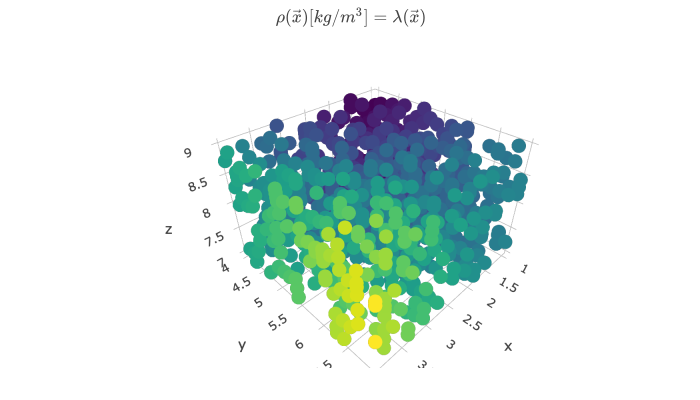

Kamodofication Tutorial¶
This tutorial focuses on building a Kamodofied model from scratch. To see the full implementation, skip down to the Final-Implementation.
Kamodofication requirements¶
To Kamodofy models and data representing physical quantities, we need to define a set of functions representing the interpolation of each physical variable having the following properties:
- A function name and arguments that follows kamodo's Syntax conventions
- Default arrays for input arguments
- A meta attribute containing:
- 'units' - physical units of the values returned by the function
- 'citation' - How the model or data source should be cited
- 'equation' - LaTeX representation of this model/data source (if available)
- 'hidden_args' - A list of function arguments that should not be rendered
- A data attribute - The array holding the variable (if available)
- Any docstrings that provide further context
Model Reader Tutorial¶
Model Readers load data from disk (or server) and provide methods for interpolation. We require that for each variable of interest, the model reader should provide at least one interpolation method that satisfies all of the above requirements. Each model reader will:
- Open/close files
- Manage state variables
- Initialize interpolators
- Kamodofy interpolators
- Register functions
Minimal Example: one variable¶
from kamodo import Kamodo, kamodofy, gridify
from scipy.interpolate import RegularGridInterpolator
import numpy as np
import plotly.io as pio
/Users/apembrok/git/kamodo/kamodo/readers/__init__.py:7: UserWarning:
TIEGCM reader not installed
class MyModel(Kamodo):
def __init__(self, filename, **kwargs):
# perform any necessary I/O
print('opening {}'.format(filename))
self.filename = filename
self.missing_value = np.NAN
# store any data needed for interpolation
self.x = np.linspace(1, 4, 11)
self.y = np.linspace(4, 7, 22)
self.z = np.linspace(7, 9, 33)
xx, yy, zz = np.meshgrid(self.x, self.y, self.z, indexing='ij', sparse=True)
density_data = 2 * xx**3 + 3 * yy**2 - zz
self.interpolator = RegularGridInterpolator((self.x, self.y, self.z), density_data,
bounds_error = False,
fill_value = self.missing_value)
# Prepare model for function registration for the input argument
super(MyModel, self).__init__(**kwargs)
# Wrap the interpolator with a nicer function signature
@kamodofy(units = 'kg/m^3')
def interpolator(xvec):
return self.interpolator(xvec)
self['rho(xvec)'] = interpolator
model = MyModel('myfile.dat')
model
opening myfile.dat
we can call the registered function with multiple values, getting nan if out of bounds:
model.rho([[2,5,8],
[0,0,0]])
array([83.244, nan])
However, the registered function has no default parameters, so an error will be raised if we do not provide an argument.
try:
model.rho()
except TypeError as m:
print(m)
interpolator() missing 1 required positional argument: 'xvec'
At this point, the end-user of the model cannot generate quick-look graphics:
try:
model.plot('rho')
except TypeError as m:
print(m)
interpolator() missing 1 required positional argument: 'xvec'[]
In order to generate any plots, the user must already know where they can place resolution. For example, they could inspect some of the attributes of the model and guess the size of the domain, then choose points from that space.
xx,yy,zz = np.meshgrid(model.x, model.y, model.z)
points = np.column_stack([xx.ravel(),yy.ravel(),zz.ravel()])
randints = np.random.randint(0,len(points), 1000)
fig = model.plot(rho = dict(xvec = points[randints] ))
pio.write_image(fig, 'images/kamodofied1.svg')

Hopefully, the user doesn't choose points where the solution may be invalid. Next, we'll modify the original function to provide a griddable variable with default parameters.
Including defaults¶
The above example produced a kamodofied model with one variable, but we are unable to produce quick-look graphics, which required the user to inspect the model to guess where interpolation may be valid. Here we show how to include defaults so the user doesn't have to guess.
class MyModel(Kamodo):
def __init__(self, filename, **kwargs):
# perform any necessary I/O
print('opening {}'.format(filename))
self.filename = filename
self.missing_value = np.NAN
# store any data needed for interpolation
self.x = np.linspace(1, 4, 11)
self.y = np.linspace(4, 7, 22)
self.z = np.linspace(7, 9, 33)
xx, yy, zz = np.meshgrid(self.x, self.y, self.z, indexing='ij', sparse=True)
density_data = 2 * xx**3 + 3 * yy**2 - zz
self.interpolator = RegularGridInterpolator((self.x, self.y, self.z), density_data,
bounds_error = False,
fill_value = self.missing_value)
# Prepare model for function registration for the input argument
super(MyModel, self).__init__(**kwargs)
# Wrap the interpolator with a nicer function signature
@kamodofy(units = 'kg/m^3')
@gridify(x = self.x, y = self.y, z = self.z) # <--- The only change to the model
def interpolator(xvec):
return self.interpolator(xvec)
self['rho'] = interpolator
model = MyModel('myfile.dat')
model
opening myfile.dat
By adding the @gridify line, we have modified the original function to be one that generates gridded data. Moreover, the variable now has default parameters.
model.rho().shape
(22, 11, 33)
We can now specify one or more arguments to get a plane mapping of the solution.
model.rho(z = 8).shape
(22, 11, 1)
But how do we know to choose the plane z=8 for a valid solution? We can use kamodo's function inspection to get the default ranges for each parameter.
from kamodo import get_defaults
get_defaults(model.rho)['z'].mean()
8.0
Final Implementation¶
In the final implementation of our model reader, we include multiple variables with different function signatures. Here, the gridded solutions have suffixes _ijk to emphasize their structure. This allows more flexibility for the end user.
class MyModel(Kamodo):
def __init__(self, filename, **kwargs):
# perform any necessary I/O
print('opening {}'.format(filename))
self.filename = filename
self.missing_value = np.NAN
# store any data needed for interpolation
self.x = np.linspace(1, 4, 11)
self.y = np.linspace(4, 7, 22)
self.z = np.linspace(7, 9, 33)
xx, yy, zz = np.meshgrid(self.x, self.y, self.z, indexing='ij', sparse=True)
density_data = 2 * xx**3 + 3 * yy**2 - zz
pressure_data = xx**2 + yy**2 + zz**2
self.variables = dict(rho = dict(units = 'kg/m^3', data = density_data),
P = dict(units = 'nPa', data = pressure_data))
# Prepare model for function registration
super(MyModel, self).__init__(**kwargs)
for varname in self.variables:
units = self.variables[varname]['units']
self.register_variable(varname, units)
def register_variable(self, varname, units):
interpolator = self.get_grid_interpolator(varname)
# store the interpolator
self.variables[varname]['interpolator'] = interpolator
def interpolate(xvec):
return self.variables[varname]['interpolator'](xvec)
# update docstring for this variable
interpolate.__doc__ = "A function that returns {} in [{}].".format(varname,units)
self[varname] = kamodofy(interpolate,
units = units,
citation = "Pembroke et al 2019",
data = None)
self[varname + '_ijk'] = kamodofy(gridify(self[varname],
x_i = self.x,
y_j = self.y,
z_k = self.z),
units = units,
citation = "Pembroke et al 2019",
data = self.variables[varname]['data'])
def get_grid_interpolator(self, varname):
"""create a regulard grid interpolator for this variable"""
data = self.variables[varname]['data']
interpolator = RegularGridInterpolator((self.x, self.y, self.z), data,
bounds_error = False,
fill_value = self.missing_value)
return interpolator
model = MyModel('myfile.dat')
model
opening myfile.dat
model.rho((2,5,8))
array(83.244)
model.P((2,5,8))
array(93.02)
model.detail()
| lhs | rhs | symbol | units | |
|---|---|---|---|---|
| rho(xvec) | rho | None | rho(xvec) | kg/m^3 |
| rho_ijk(x_i, y_j, z_k) | rho_ijk | None | rho_ijk(x_i, y_j, z_k) | kg/m^3 |
| P(xvec) | P | None | P(xvec) | nPa |
| P_ijk(x_i, y_j, z_k) | P_ijk | None | P_ijk(x_i, y_j, z_k) | nPa |
Here the @kamodofy decorator handles the provisioning of kamodo-specific metadata. For example, the declared function rho now has a meta attribute:
model.rho.meta
{'units': 'kg/m^3',
'citation': 'Pembroke et al 2019',
'equation': None,
'hidden_args': []}
@kamodofy also adds the data attribute, by calling the function with its default parameters:
model.rho_ijk.data.shape
(11, 22, 33)
Combined models¶
We could also register the model's interpolating method as part of some other Kamodo object, such as another kamodofied model reader or data source:
from kamodo import Kamodo
kamodo = Kamodo(rho = model.rho)
kamodo
We can now compose our density function with expressions defined by other models:
kamodo['vol [cm^3]'] = '4/3 * pi * (x**2 + y**2)**(3/2)'
kamodo['mass [g]'] = 'rho*vol'
kamodo
kamodo.detail()
| lhs | rhs | symbol | units | |
|---|---|---|---|---|
| rho(xvec) | rho | None | rho(xvec) | kg/m^3 |
| vol(x, y) | vol | 4*pi*(x**2 + y**2)**(3/2)/3 | vol(x, y) | cm^3 |
| mass(x, xvec, y) | mass | rho(xvec)*vol(x, y)/1000 | mass(x, xvec, y) | g |
The following lines will save the image to your working directory.
Note
Saving images requires plotly-orca-1.2.1, available through conda: conda install -c plotly plotly-orca
model.rho_ijk().shape
(22, 11, 33)
import plotly.io as pio
fig = model.plot(rho_ijk = dict(z_k = model.z.mean()))
from plotly.offline import iplot, init_notebook_mode, plot
init_notebook_mode(connected = True)
fig = model.plot(rho_ijk = dict(z_k = [model.z.mean()]))
pio.write_image(fig, 'kamodofied_model_1.svg', validate = False)
We use markdown to embed the image into the notebook.

Alternative ways to graph:
## uncomment to open interactive plot in the notebook
# from plotly.offline import init_notebook_mode, iplot
# init_notebook_mode(connected = True)
# iplot(kamodo.plot(rho = dict(x = model.x.mean())))
# # uncomment to open interactive plot in separate tab
# from plotly.offline import plot
# plot(kamodo.plot(rho = dict(z = 8)))
%load_ext autoreload
%autoreload 2